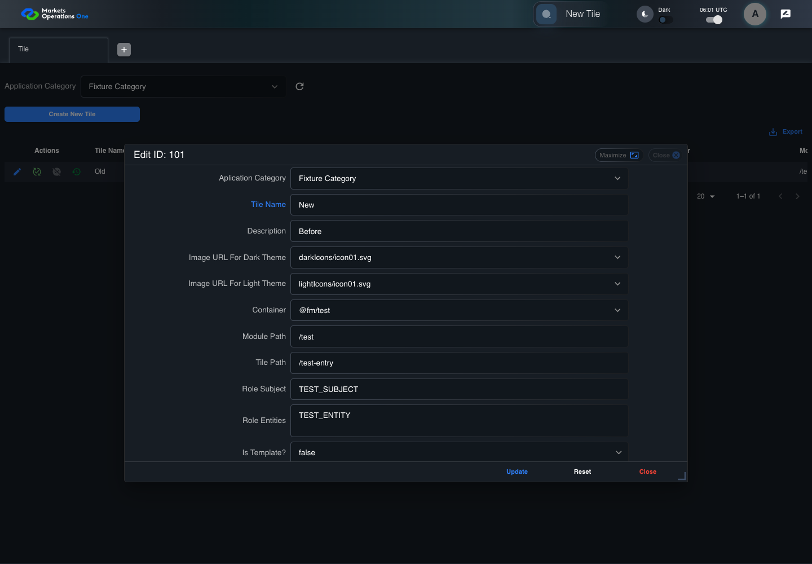

UX-051 administration boundary with step screenshots
FAIL · application/run-050/ux-051-administration-boundary-with-step-screenshots-cb82a63fff44-attempt-1 · ACTUAL_APPLICATION_LOCAL_SERVICES
Actual React administration screens. Controlled browser credentials, role, records, and BFF responses. Save probes persist the received UI payload without replacing it with expected values. Declared clock emulation controls field timers. Proposed accessibility and source-risk expectations remain separate from business approval.
2026-10-22T06:01:55.720Z to 2026-10-22T06:01:59.330Z
Assertions and result · Artifact manifest · Exact run inputs and source hashes
Result SHA-256:62038ad390b195da318185235e989c3bcee75096b25c6e2ab6fb8828a10ea6acRetained failure details
[
{
"message": "Error: \u001b[2mexpect(\u001b[22m\u001b[31mreceived\u001b[39m\u001b[2m).\u001b[22mtoBe\u001b[2m(\u001b[22m\u001b[32mexpected\u001b[39m\u001b[2m) // Object.is equality\u001b[22m\n\nExpected: \u001b[32m\"New\"\u001b[39m\nReceived: \u001b[31m\"Old\"\u001b[39m",
"stack": "Error: \u001b[2mexpect(\u001b[22m\u001b[31mreceived\u001b[39m\u001b[2m).\u001b[22mtoBe\u001b[2m(\u001b[22m\u001b[32mexpected\u001b[39m\u001b[2m) // Object.is equality\u001b[22m\n\nExpected: \u001b[32m\"New\"\u001b[39m\nReceived: \u001b[31m\"Old\"\u001b[39m\n at /Users/lushevol/code/github/ratan-release-impact/workbench/e2e/audit-specs/admin-ux.spec.ts:134:93\n at AuditCapture.step (/Users/lushevol/code/github/ratan-release-impact/workbench/e2e/support/audit-fixture.ts:94:21)\n at /Users/lushevol/code/github/ratan-release-impact/workbench/e2e/audit-specs/admin-ux.spec.ts:39:31",
"location": {
"file": "/Users/lushevol/code/github/ratan-release-impact/workbench/e2e/audit-specs/admin-ux.spec.ts",
"column": 93,
"line": 134
},
"snippet": " 132 | const expected = /\"(New|ABC)\"/.exec(text)![1];\n 133 | const request = app.requests.filter(request => request.endpoint === 'tile/update').at(-1);\n> 134 | await audit.record('captured-update-payload', request); expect(request?.body.title).toBe(expected); return;\n | ^\n 135 | }\n 136 | if ((match = /Tile grid row.* contains \"Tile Name\" equal to \"([^\"]+)\"/.exec(text))) { await expect(await app.reveal('title', '101')).toHaveText(match[1]); return; }\n 137 | if (text.includes('contains literal text')) { await expect(await app.reveal('label', '101')).toHaveText('<script>alert(1)</script>'); return; }"
}
]Machine observations
- captured-update-payload.json
e1feb9024ccda1bb2cc8fcf01fc75aae33762ebfd4854f7d117d1ce9825320fb - ui-origin-admin-requests.json
dd53f7507c68583c88f7d2fe046c714e3de206606065b730a5060848f71a6433
Screenshot capture: CAPTURED. Named frames: 7.
Step screenshot evidence: INCOMPLETE. 6/10 canonical steps have execution screenshots.
Step 7 has no screenshot from an executed step. Step 8 has no screenshot from an executed step. Step 9 has no screenshot from an executed step. Step 10 has no screenshot from an executed step.
Canonical step timeline
Given ADMIN-A has T1 record101 loaded with Tile Name "Old" and a request-persisting successful save fixture
Execution: PASSED.1. step-01 Visible state after step 1: Given ADMIN-A has T1 record101 loaded with Tile Name "Old" and a request-persisting successful save fixture
2026-10-22T06:01:58.299Z · 1440×1000
Step: /Users/lushevol/code/github/ratan-release-impact/workbench/tasks/ui-test-coverage-20261022/test-cases.md:13888
SHA-256:9e90fa7ae1d76e3f871a6e5538f7bfec269a034303e5d9155890dc9e6a4c4a67When ADMIN-A types "New" as the replacement value in the textbox labelled "Tile Name" in the dialog with title text "edit ID: 101" on the administration page
Execution: PASSED.
2. step-02 Visible state after step 2: When ADMIN-A types "New" as the replacement value in the textbox labelled "Tile Name" in the dialog with title text "edit ID: 101" on the administration page
2026-10-22T06:01:58.395Z · 1440×1000
Step: /Users/lushevol/code/github/ratan-release-impact/workbench/tasks/ui-test-coverage-20261022/test-cases.md:13889
SHA-256:56e9d9fb1f9f9440b3aed6fe2f1dcdf6cada3201d9f421be2b54c1615b08e104And The controlled event loop advances 0 milliseconds from the final input event
Execution: PASSED.3. step-03 Visible state after step 3: And The controlled event loop advances 0 milliseconds from the final input event
2026-10-22T06:01:58.499Z · 1440×1000
Step: /Users/lushevol/code/github/ratan-release-impact/workbench/tasks/ui-test-coverage-20261022/test-cases.md:13890
SHA-256:f9e9abea63877f0098171d03d45ffca5525cefe6e48c4b9b5e5487247f1fcd9cAnd ADMIN-A clicks the button labelled "Update" in the dialog with title text "edit ID: 101" on the administration page
Execution: PASSED.4. step-04 Visible state after step 4: And ADMIN-A clicks the button labelled "Update" in the dialog with title text "edit ID: 101" on the administration page
2026-10-22T06:01:58.690Z · 1440×1000
Step: /Users/lushevol/code/github/ratan-release-impact/workbench/tasks/ui-test-coverage-20261022/test-cases.md:13891
SHA-256:1de0f82b135f68e4fb99cad8f84b4ba535682706ea302696c4278e0815947705And The controlled event loop completes every pending field callback and save response
Execution: PASSED.5. step-05 Visible state after step 5: And The controlled event loop completes every pending field callback and save response
2026-10-22T06:01:58.754Z · 1440×1000
Step: /Users/lushevol/code/github/ratan-release-impact/workbench/tasks/ui-test-coverage-20261022/test-cases.md:13892
SHA-256:3444fcb3a5b9d2dedaf473deb49729f2e6491591ec8c9feeb0649b6363690fabThen The captured update payload has title equal to "New"
Execution: FAILED.6. step-06-failure Visible state when step 6 failed. Later steps did not execute.
2026-10-22T06:01:58.804Z · 1440×1000
Step: /Users/lushevol/code/github/ratan-release-impact/workbench/tasks/ui-test-coverage-20261022/test-cases.md:13893
SHA-256:59fa89b032eb6f683d8e52446db3ccc467871374581ae662093368303b12c53fWhen The browser fixture reloads the Tile page from the persisted received payload
Execution: NOT_EXECUTED.No screenshot is recorded for this step. No executed state is claimed.
Then The Tile grid row with "Record Id" equal to "101" contains "Tile Name" equal to "New"
Execution: NOT_EXECUTED.No screenshot is recorded for this step. No executed state is claimed.
When ADMIN-A clicks the button labelled "Edit" in the Tile grid row with "Record Id" equal to "101" on the administration page
Execution: NOT_EXECUTED.No screenshot is recorded for this step. No executed state is claimed.
Then The textbox labelled "Tile Name" in the dialog with title text "edit ID: 101" on the administration page has value equal to "New"
Execution: NOT_EXECUTED.No screenshot is recorded for this step. No executed state is claimed.
Additional named frames
Screenshots establish visible state only. Assertions and traces support functional claims.